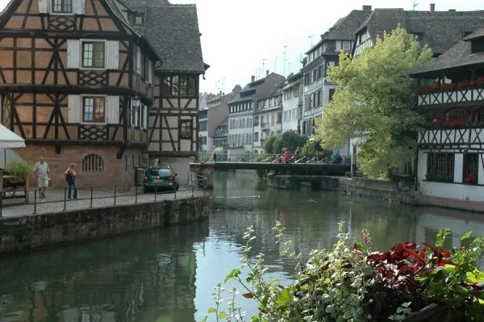
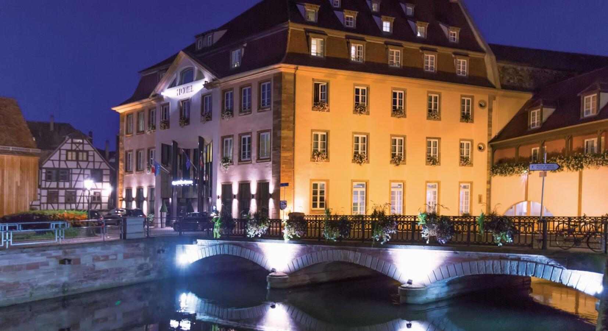
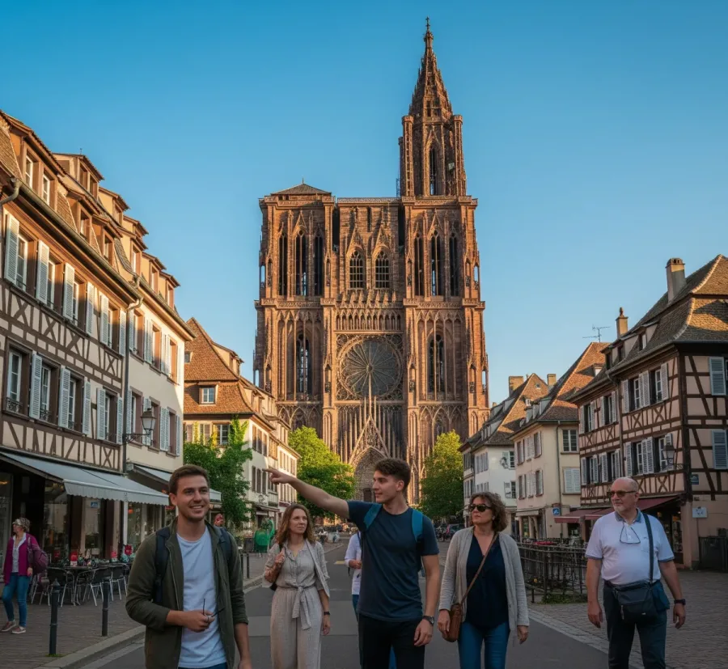

Déjese seducir por esta obra maestra del gótico, símbolo de Estrasburgo por excelencia.

Situado a dos pasos del centro histórico, el barrio europeo guarda muchos tesoros escondidos. Se puede simplemente dar un paseo combinando naturaleza y arquitectura, o aprender sobre la historia y el funcionamiento de las instituciones, ¡hay para satisfacer todos los gustos y curiosidades!

Este mítico barrio de Estrasburgo era antiguamente el de los molineros, curtidores y pescadores. Las casas con entramado de madera, las calles y los muelles contribuyen a su atmósfera romántica e intimista.

Déjese tentar por una visita a Estrasburgo: gracias a su entorno, las diferentes formas de visitar la ciudad y las numerosas actividades, vivirá una experiencia inolvidable en familia.